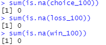
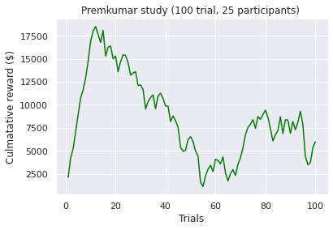
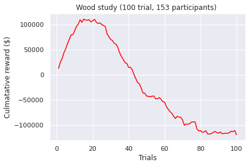
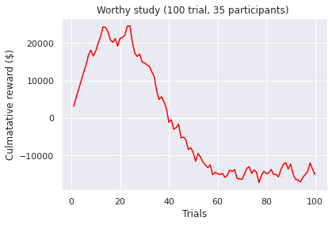
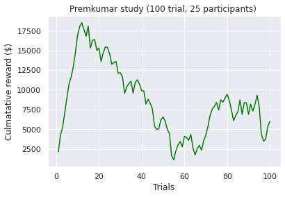
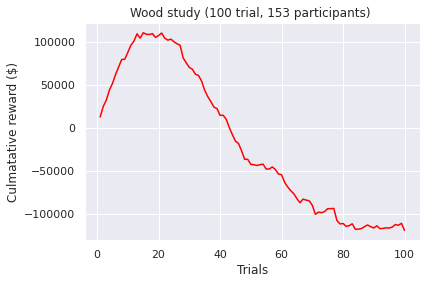
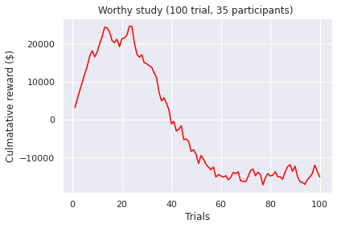

Initial Data Exploration¶
The purpose of our initial data exploration is to:
- Check the validity of the data and perform data cleaning methods if needed.
- View the statistical details of the data and perform data visualization to improve our understanding of the data
- Initiate new hypotheses on both the future clustering and evaluation method.
- Validate assumptions of any clustering methods we intend to use & perform transformations if needed.
- Measure clustering & central tendency.
If you are viewing this as an HTML page, please use the content toolbar to the right for quick access to different sections.
Importing required libraries¶
Data processing
import pandas as pd
Data Visualization
import matplotlib.pyplot as plt
import seaborn as sns
For the purposes of this exploration, we load in 12 different csv files.
Type |
File Name |
Description |
|---|---|---|
Choices |
choices_95.csv, choices_100.csv, choices_150.csv |
These CSV’s contains all of the choices made by test-takers during the examined studies. Note, the 10 studies described in the Introduction section are grouped by the number of trails. The integer suffix of the file name indicates the number of trails performed. For example, the 1st row and 2nd column instance of the choices_95.csv file describes a participant’s 2nd card choice in a 95 trail study. |
Wins |
wi_95.csv, wi_100.csv, wi_150.csv |
These datasets describe the wins received by participants in 95, 100 and 150 trail investigations, as indicated by the suffix. For example, the 3rd row and 5th column entry of the wi_100.csv file details the monetary gain received by a participant on their 5th choice in 100 trail study. |
Losses |
lo_95.csv, lo_100.csv, lo_150.csv |
These files contain the loses received by participants in 95, 100 and 150 trail investigations, as indicated by the suffix. For example, the 2nd row and 8th column entry of the lo_150.csv file details the monetary penalty received by a participant on their 8th choice in 150 trail study. |
Index |
index_95.csv, index_100.csv, index_150.csv |
index_95.csv, index_100.csv, and index_150.csv map the first author of the study that reports the data to the corresponding subject. |
choice_95 = pd.read_csv('data/choice_95.csv')
choice_100 = pd.read_csv('data/choice_100.csv')
choice_150 = pd.read_csv('data/choice_150.csv')
win_95 = pd.read_csv('data/wi_95.csv')
win_100 = pd.read_csv('data/wi_100.csv')
win_150 = pd.read_csv('data/wi_150.csv')
loss_95 = pd.read_csv('data/lo_95.csv')
loss_100 = pd.read_csv('data/lo_100.csv')
loss_150 = pd.read_csv('data/lo_150.csv')
index_95 = pd.read_csv('data/index_95.csv')
index_100 = pd.read_csv('data/index_100.csv')
index_150 = pd.read_csv('data/index_150.csv')
Currently, the dataframes have columns in the following name format: <Description>_<Trial number> as indicated down below.
print(f'Win dataframes have the following name format: {", ".join(list(win_100.columns[:3]))}')
print(f'Loss dataframes have the following name format: {", ".join(list(loss_100.columns[:3]))}')
print(f'Choice dataframes have the following name format: {", ".join(list(choice_100.columns[:3]))}')
Win dataframes have the following name format: Wins_1, Wins_2, Wins_3
Loss dataframes have the following name format: Losses_1, Losses_2, Losses_3
Choice dataframes have the following name format: Choice_1, Choice_2, Choice_3
For uniformity, we will replace the column names to have a Trial_<Trial number> format as the variable names already indicates functionality.
column_names = [f'trial_{num}' for num in range(1,96)]
choice_95.columns = win_95.columns = loss_95.columns = column_names
column_names.extend([f'trial_{num}' for num in range(96,101)])
choice_100.columns = win_100.columns = loss_100.columns = column_names
column_names.extend([f'trial_{num}' for num in range(101,151)])
choice_150.columns = win_150.columns = loss_150.columns = column_names
win_95.head(5)
| trial_1 | trial_2 | trial_3 | trial_4 | trial_5 | trial_6 | trial_7 | trial_8 | trial_9 | trial_10 | ... | trial_86 | trial_87 | trial_88 | trial_89 | trial_90 | trial_91 | trial_92 | trial_93 | trial_94 | trial_95 | |
|---|---|---|---|---|---|---|---|---|---|---|---|---|---|---|---|---|---|---|---|---|---|
| Subj_1 | 100 | 100 | 100 | 100 | 100 | 100 | 100 | 100 | 100 | 100 | ... | 50 | 50 | 50 | 50 | 50 | 50 | 50 | 50 | 50 | 50 |
| Subj_2 | 100 | 100 | 50 | 100 | 100 | 100 | 100 | 100 | 100 | 100 | ... | 50 | 100 | 100 | 100 | 100 | 100 | 50 | 50 | 50 | 50 |
| Subj_3 | 50 | 50 | 50 | 100 | 100 | 100 | 100 | 100 | 100 | 100 | ... | 100 | 100 | 100 | 50 | 50 | 50 | 50 | 50 | 50 | 50 |
| Subj_4 | 50 | 50 | 100 | 100 | 100 | 100 | 100 | 50 | 100 | 100 | ... | 100 | 50 | 50 | 50 | 50 | 50 | 50 | 50 | 50 | 50 |
| Subj_5 | 100 | 100 | 50 | 50 | 50 | 100 | 100 | 100 | 100 | 100 | ... | 50 | 50 | 50 | 50 | 50 | 50 | 50 | 50 | 50 | 50 |
5 rows × 95 columns
Data Cleaning¶
Check for null values
print(f'Does choice_95 contain any null values? {choice_95.isnull().any().any()}')
print(f'Does choice_100 contain any null values? {choice_100.isnull().any().any()}')
print(f'Does choice_150 contain any null values? {choice_150.isnull().any().any()}')
Does choice_95 contain any null values? False
Does choice_100 contain any null values? False
Does choice_150 contain any null values? False
print(f'Does win_95 contain any null values? {win_95.isnull().any().any()}')
print(f'Does win_100 contain any null values? {win_100.isnull().any().any()}')
print(f'Does win_150 contain any null values? {win_150.isnull().any().any()}')
Does win_95 contain any null values? False
Does win_100 contain any null values? False
Does win_150 contain any null values? False
print(f'Does choice_95 contain any null values? {loss_95.isnull().any().any()}')
print(f'Does choice_100 contain any null values? {loss_100.isnull().any().any()}')
print(f'Does choice_150 contain any null values? {loss_150.isnull().any().any()}')
Does choice_95 contain any null values? False
Does choice_100 contain any null values? False
Does choice_150 contain any null values? False
print(f'Does index_95 contain any null values? {index_95.isnull().values.any()}')
print(f'Does index_100 contain any null values? {index_100.isnull().values.any()}')
print(f'Does index_150 contain any null values? {index_150.isnull().values.any()}')
Does index_95 contain any null values? False
Does index_100 contain any null values? False
Does index_150 contain any null values? False
This finding seems to contradict the original ‘many labs’ paper. They suggest that their should be missing data present in the 100 trial dataframes due to incompletely received datasets (i.e., missing data for one participant in Kjome et al. study, and for two participants in Wood et al. study). However, they use the word ‘might’ so it is possible this has been rectified since then. I also further validated this assumption using the R programming language as the organizers provided the datasets in the rdata format. The below screenshot confirms my assumption that no missing values are present.

Next, we calculate the basic statistics of each data set. This is a trivial step and it is designed to increase my understanding of the problem.
# choice dataframes
for trial_num in [95, 100, 150]:
print(f'choice_{trial_num} basic statistics')
print(globals()[f'choice_{trial_num}'].describe().iloc[:,:6])
print('\n')
choice_95 basic statistics
trial_1 trial_2 trial_3 trial_4 trial_5 trial_6
count 15.000000 15.000000 15.000000 15.000000 15.000000 15.000000
mean 2.133333 2.333333 2.466667 2.600000 2.533333 2.133333
std 1.355764 0.816497 1.060099 1.183216 1.125463 0.990430
min 1.000000 1.000000 1.000000 1.000000 1.000000 1.000000
25% 1.000000 2.000000 1.500000 2.000000 2.000000 1.500000
50% 1.000000 2.000000 3.000000 2.000000 2.000000 2.000000
75% 3.500000 2.500000 3.000000 4.000000 3.500000 2.500000
max 4.000000 4.000000 4.000000 4.000000 4.000000 4.000000
choice_100 basic statistics
trial_1 trial_2 trial_3 trial_4 trial_5 trial_6
count 504.000000 504.000000 504.000000 504.000000 504.000000 504.000000
mean 2.142857 2.416667 2.337302 2.434524 2.281746 2.337302
std 1.099172 1.092628 1.090952 1.138377 1.095801 1.044401
min 1.000000 1.000000 1.000000 1.000000 1.000000 1.000000
25% 1.000000 1.000000 1.000000 1.000000 1.000000 2.000000
50% 2.000000 2.000000 2.000000 2.000000 2.000000 2.000000
75% 3.000000 3.000000 3.000000 4.000000 3.000000 3.000000
max 4.000000 4.000000 4.000000 4.000000 4.000000 4.000000
choice_150 basic statistics
trial_1 trial_2 trial_3 trial_4 trial_5 trial_6
count 98.000000 98.000000 98.000000 98.000000 98.000000 98.000000
mean 2.795918 2.663265 2.469388 2.561224 2.500000 2.346939
std 1.044960 1.083559 1.168346 1.175930 1.159897 1.103902
min 1.000000 1.000000 1.000000 1.000000 1.000000 1.000000
25% 2.000000 2.000000 1.000000 1.250000 1.250000 1.000000
50% 3.000000 3.000000 2.000000 3.000000 2.000000 2.000000
75% 4.000000 4.000000 4.000000 4.000000 4.000000 3.000000
max 4.000000 4.000000 4.000000 4.000000 4.000000 4.000000
# win dataframes
for trial_num in [95, 100, 150]:
print(f'win_{trial_num} basic statistics')
print(globals()[f'win_{trial_num}'].describe().iloc[:,:6])
print('\n')
win_95 basic statistics
trial_1 trial_2 trial_3 trial_4 trial_5 trial_6
count 15.000000 15.000000 15.000000 15.000000 15.000000 15.000000
mean 80.000000 86.666667 70.000000 76.666667 76.666667 86.666667
std 25.354628 22.886885 25.354628 25.819889 25.819889 22.886885
min 50.000000 50.000000 50.000000 50.000000 50.000000 50.000000
25% 50.000000 75.000000 50.000000 50.000000 50.000000 75.000000
50% 100.000000 100.000000 50.000000 100.000000 100.000000 100.000000
75% 100.000000 100.000000 100.000000 100.000000 100.000000 100.000000
max 100.000000 100.000000 100.000000 100.000000 100.000000 100.000000
win_100 basic statistics
trial_1 trial_2 trial_3 trial_4 trial_5 trial_6
count 504.000000 504.000000 504.000000 504.000000 504.000000 504.000000
mean 81.646825 77.956349 76.636905 77.172619 81.369048 80.724206
std 24.124146 26.566060 25.105129 25.387493 25.387860 25.399812
min 50.000000 40.000000 40.000000 40.000000 40.000000 40.000000
25% 50.000000 50.000000 50.000000 50.000000 50.000000 50.000000
50% 100.000000 100.000000 80.000000 90.000000 100.000000 100.000000
75% 100.000000 100.000000 100.000000 100.000000 100.000000 100.000000
max 100.000000 120.000000 120.000000 120.000000 120.000000 120.000000
win_150 basic statistics
trial_1 trial_2 trial_3 trial_4 trial_5 trial_6
count 98.000000 98.000000 98.000000 98.000000 98.000000 98.000000
mean 68.877551 72.959184 75.510204 74.489796 76.530612 79.591837
std 24.363343 25.044669 25.123302 25.123302 25.081395 24.701032
min 50.000000 50.000000 50.000000 50.000000 50.000000 50.000000
25% 50.000000 50.000000 50.000000 50.000000 50.000000 50.000000
50% 50.000000 50.000000 100.000000 50.000000 100.000000 100.000000
75% 100.000000 100.000000 100.000000 100.000000 100.000000 100.000000
max 100.000000 100.000000 100.000000 100.000000 100.000000 100.000000
# loss dataframes
for trial_num in [95, 100, 150]:
print(f'loss_{trial_num} basic statistics')
print(globals()[f'loss_{trial_num}'].describe().iloc[:,:6])
print('\n')
loss_95 basic statistics
trial_1 trial_2 trial_3 trial_4 trial_5 trial_6
count 15.0 15.0 15.000000 15.0 15.000000 15.0
mean 0.0 0.0 -3.333333 0.0 -20.000000 0.0
std 0.0 0.0 12.909944 0.0 52.779866 0.0
min 0.0 0.0 -50.000000 0.0 -150.000000 0.0
25% 0.0 0.0 0.000000 0.0 0.000000 0.0
50% 0.0 0.0 0.000000 0.0 0.000000 0.0
75% 0.0 0.0 0.000000 0.0 0.000000 0.0
max 0.0 0.0 0.000000 0.0 0.000000 0.0
loss_100 basic statistics
trial_1 trial_2 trial_3 trial_4 trial_5 \
count 504.000000 504.000000 504.000000 504.000000 504.000000
mean -37.301587 -40.376984 -64.682540 -39.384921 -49.107143
std 149.610031 175.942949 192.871723 152.257429 157.402488
min -1250.000000 -1250.000000 -1250.000000 -1250.000000 -1250.000000
25% 0.000000 0.000000 -50.000000 0.000000 0.000000
50% 0.000000 0.000000 0.000000 0.000000 0.000000
75% 0.000000 0.000000 0.000000 0.000000 0.000000
max 0.000000 0.000000 0.000000 0.000000 0.000000
trial_6
count 504.000000
mean -58.333333
std 213.067159
min -1250.000000
25% 0.000000
50% 0.000000
75% 0.000000
max 0.000000
loss_150 basic statistics
trial_1 trial_2 trial_3 trial_4 trial_5 \
count 98.000000 98.000000 98.000000 98.000000 98.000000
mean -33.673469 -64.795918 -81.122449 -88.775510 -120.918367
std 75.905364 191.872109 227.323661 255.509458 302.218896
min -350.000000 -1250.000000 -1250.000000 -1250.000000 -1250.000000
25% -50.000000 -50.000000 -50.000000 -50.000000 -50.000000
50% 0.000000 0.000000 0.000000 0.000000 0.000000
75% 0.000000 0.000000 0.000000 0.000000 0.000000
max 0.000000 0.000000 0.000000 0.000000 0.000000
trial_6
count 98.000000
mean -109.183673
std 282.692042
min -1250.000000
25% -50.000000
50% 0.000000
75% 0.000000
max 0.000000
Cumulative reward is commonly used to evaluate reinforcement learning models (RLM). This metric stems form the idea on how humans learn through interaction. RLMs attempt to be a computational approach of the same mechanism:
A agent receives state \(S_{0}\) from the environment (In this case, the agent received the four decks of cards, “untouched”).
Based on the \(S_{0}\), the agent takes an action \(A_{0}\) (our agent will pick a card from deck A, B, C, or D).
Environment transitions to a new state \(S_{1}\) (our agent is present with the same deck of cards, albeit their first choice absent).
Environment gives some reward \(R_{1}\) to the agent.
Therefore, Cumulative reward at trial t can be defined as: $\( G(t) = \sum_{k=0}^T R_{t+k+1} \)$
We attempt to plot the calmative reward for the participants surveyed. However, given the large number of participants available, it is infeasible to plot for every subject. Therefore, we will group participants by study. So, the G(t) for a study will be cacluated as follows:
The next few code cells perform the data processing steps required to produce the visualisations. Asserts are used to test that the transformation has been performed correctly.
# 95 Trial studies
# Getting the reward (positive or negative) for each subject
rewards_95 = win_95.add(loss_95)
assert rewards_95.iloc[1,2] == 50
assert rewards_95.iloc[13,7] == 100
# Acquiring the cumaltive reward for each particpant
cum_reward_95 = rewards_95.cumsum(axis=1)
assert cum_reward_95.iloc[0,8] == -350
assert cum_reward_95.iloc[11, 6] == 500
assert cum_reward_95.iloc[8,67] == -450
# Acquiring the sum of cumulative rewards for each trial
cum_reward_95 = cum_reward_95.sum(axis=0)
assert cum_reward_95['trial_1'] == 1200
assert cum_reward_95['trial_5'] == 5500
assert cum_reward_95['trial_91'] == -650
assert cum_reward_95['trial_95'] == 1250
# All 15 particpants in a 95 trial came from same study
cum_reward_95_mapped =pd.DataFrame(index=index_95['Study'].unique().tolist(), data=cum_reward_95.to_dict())
cum_reward_95_mapped.iloc[:,:10]
| trial_1 | trial_2 | trial_3 | trial_4 | trial_5 | trial_6 | trial_7 | trial_8 | trial_9 | trial_10 | |
|---|---|---|---|---|---|---|---|---|---|---|
| Fridberg | 1200 | 2500 | 3500 | 4650 | 5500 | 6800 | 7650 | 8800 | 8550 | 9550 |
# 100 Trial studies
# Getting the reward (positive or negative) for each subject
rewards_100 = win_100.add(loss_100)
assert rewards_100.iloc[2,3] == -200
assert rewards_100.iloc[500,97] == 50
# Acquiring the cumaltive reward for each particpant
cum_reward_100 = rewards_100.cumsum(axis=1)
assert cum_reward_100.iloc[3, 9] == -1000
assert cum_reward_100.iloc[499, 98] == 25
assert cum_reward_100.iloc[2, 92] == -1050
# mapping subject to their corresponding study
cum_reward_100['study'] = index_100['Study'].values.tolist()
assert cum_reward_100['study'].loc['Subj_5'] == 'Horstmann'
assert cum_reward_100['study'].loc['Subj_250'] == 'SteingroverInPrep'
assert cum_reward_100['study'].loc['Subj_500'] == 'Worthy'
# Acquiring the sum of cumulative rewards for each trial grouped by study
cum_reward_100_mapped = pd.DataFrame(index = cum_reward_100['study'].unique().tolist(), columns=column_names[0:100])
for name in column_names[0:100]:
for study, sum_value in cum_reward_100.groupby('study')[name].sum().iteritems():
cum_reward_100_mapped[name].loc[study] = sum_value
assert cum_reward_100_mapped['trial_1'].loc['Horstmann'] == cum_reward_100[cum_reward_100['study'] == 'Horstmann']['trial_1'].sum()
assert cum_reward_100_mapped['trial_20'].loc['Maia'] == cum_reward_100[cum_reward_100['study'] == 'Maia']['trial_20'].sum()
assert cum_reward_100_mapped['trial_69'].loc['Wood'] == cum_reward_100[cum_reward_100['study'] == 'Wood']['trial_69'].sum()
assert cum_reward_100_mapped['trial_87'].loc['Premkumar'] == cum_reward_100[cum_reward_100['study'] == 'Premkumar']['trial_87'].sum()
cum_reward_100_mapped.iloc[:, :10]
| trial_1 | trial_2 | trial_3 | trial_4 | trial_5 | trial_6 | trial_7 | trial_8 | trial_9 | trial_10 | |
|---|---|---|---|---|---|---|---|---|---|---|
| Horstmann | 900 | 450 | -3600 | -5750 | -2650 | -5200 | -9400 | -17450 | -20150 | -24350 |
| Kjome | 1600 | 3230 | 3800 | 5215 | 5805 | 6790 | 7515 | 8690 | 9370 | 10670 |
| Maia | 3350 | 6550 | 8900 | 11950 | 14350 | 17150 | 20000 | 22300 | 20000 | 22500 |
| SteingroverInPrep | -1450 | -3650 | -7200 | -6050 | -7650 | -11750 | -9900 | -11950 | -10750 | -10000 |
| Premkumar | 2100 | 4230 | 5235 | 7075 | 8915 | 10760 | 11630 | 12915 | 14745 | 16900 |
| Wood | 12750 | 24930 | 32430 | 44020 | 51750 | 62055 | 70930 | 79645 | 80015 | 87995 |
| Worthy | 3100 | 5550 | 7750 | 9900 | 12100 | 14100 | 16750 | 18100 | 16500 | 17850 |
There is a lot more that you can do with outputs (such as including interactive outputs) with your book. For more information about this, see the Jupyter Book documentation
cum_reward_95
# 150 Trial studies
# Getting the reward (positive or negative) for each subject
rewards_150 = win_150.add(loss_150)
assert rewards_150.iloc[4,3] == 50
assert rewards_150.iloc[96,143] == -100
# Acquiring the cumaltive reward for each particpant
cum_reward_150 = rewards_150.cumsum(axis=1)
assert cum_reward_150.iloc[4,142] == 1800
assert cum_reward_150.iloc[93, 8] == 300
# mapping subject to their corresponding study
cum_reward_150['study'] = index_150['Study'].values.tolist()
assert cum_reward_150['study'].loc['Subj_5'] == 'Steingroever2011'
assert cum_reward_150['study'].loc['Subj_93'] == 'Wetzels'
# Acquiring the sum of cumulative rewards for each trial grouped by study
cum_reward_150_mapped = pd.DataFrame(index = cum_reward_150['study'].unique().tolist(), columns=column_names[0:150])
for name in column_names[0:150]:
for study, sum_value in cum_reward_150.groupby('study')[name].sum().iteritems():
cum_reward_150_mapped[name].loc[study] = sum_value
assert cum_reward_100_mapped['trial_1'].loc['Horstmann'] == cum_reward_100[cum_reward_100['study'] == 'Horstmann']['trial_1'].sum()
assert cum_reward_100_mapped['trial_20'].loc['Maia'] == cum_reward_100[cum_reward_100['study'] == 'Maia']['trial_20'].sum()
cum_reward_150_mapped.iloc[:, :10]
| trial_1 | trial_2 | trial_3 | trial_4 | trial_5 | trial_6 | trial_7 | trial_8 | trial_9 | trial_10 | |
|---|---|---|---|---|---|---|---|---|---|---|
| Steingroever2011 | 1850 | 3100 | 2250 | 550 | -3400 | -3500 | -4750 | -6900 | -7900 | -8450 |
| Wetzels | 1600 | 1150 | 1450 | 1750 | 1350 | -1450 | -1350 | -900 | -200 | -1400 |
Visualizations of the sum of cumulative rewards at trails, grouped by study. Note, a green line indicates a positive end value where as a red line indicates a negative end value.
sns.set(style='darkgrid')
end_value, colour = cum_reward_95_mapped['trial_95'].iloc[0], 'red'
if end_value > 0:
colour ='green'
fig = sns.lineplot(x=list(range(1, len(cum_reward_95_mapped.columns)+1)), y =cum_reward_95_mapped.iloc[0,:], color=colour)
plt.xlabel("Trials")
plt.ylabel("Culmatative reward ($)")
plt.title(f"{''.join(cum_reward_95_mapped.index.unique().to_list())} study (95 trials, 15 particpants) ")
plt.show(fig)
for study in cum_reward_100_mapped.index:
end_value, colour = cum_reward_100_mapped['trial_100'].loc[study], 'red'
if end_value > 0:
colour ='green'
fig = sns.lineplot(x=list(range(1, len(cum_reward_100_mapped.columns)+1)), y =cum_reward_100_mapped.loc[study].values.tolist(), color=colour)
plt.xlabel("Trials")
plt.ylabel("Culmatative reward ($)")
plt.title(f"{''.join(study)} study (100 trial, {len(index_100[index_100['Study'] == study])} participants) ")
plt.show()
 





for study in cum_reward_150_mapped.index:
end_value, colour = cum_reward_150_mapped['trial_150'].loc[study], 'red'
if end_value > 0:
colour ='green'
fig = sns.lineplot(x=list(range(1, len(cum_reward_150_mapped.columns)+1)), y =cum_reward_150_mapped.loc[study].values.tolist(), color=colour)
plt.xlabel("Trials")
plt.ylabel("Culmatative reward ($)")
plt.title(f"{''.join(study)} study (150 trial, {len(index_150[index_150['Study'] == study])} participants) ")
plt.show(fig)
def plot(axrow, x, y):
axrow[0].plot(x, color='red')
axrow[1].plot(y, color='green')
nrows = 3
fig, axes = plt.subplots(nrows, 2)
for study in cum_reward_100_mapped.index:
end_value, colour = cum_reward_100_mapped['trial_100'].loc[study], 'red'
if end_value > 0:
colour ='green'
x=list(range(1, len(cum_reward_100_mapped.columns)+1)),
y =cum_reward_100_mapped.loc[study].values.tolist(), color=colour)
plot(row)
File "/tmp/ipykernel_1749/3977357598.py", line 12
y =cum_reward_100_mapped.loc[study].values.tolist(), color=colour)
^
SyntaxError: invalid syntax
Data Processing¶
The performance of the participants on IGT may have been altered by factors that varied across the included studies (e.g. randomly shuffled payoff or fixed payoff sequence) . To mitigate against these factors and allow for more accurate comparison, we restrict our investigation to a subset of the available data. This subset contains the 7 investigations that use the